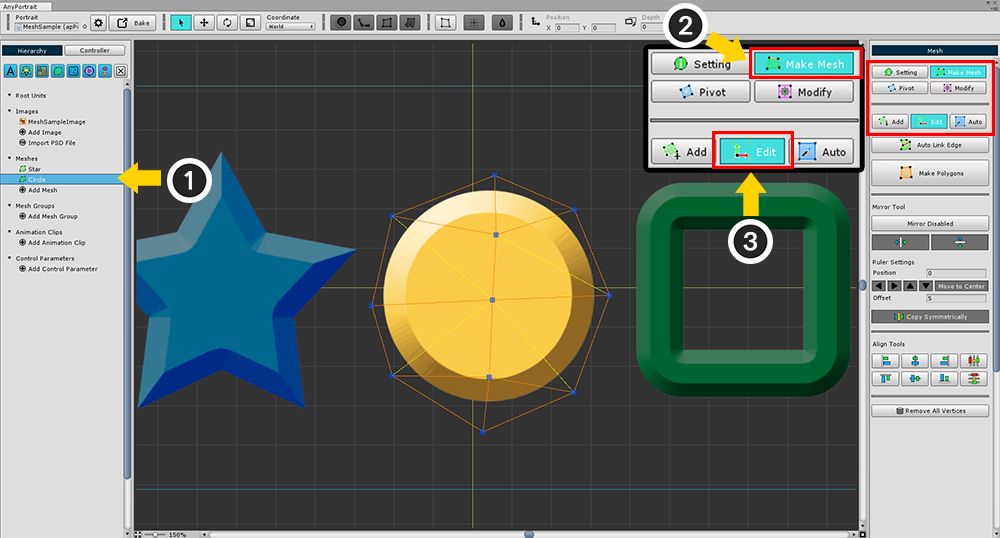
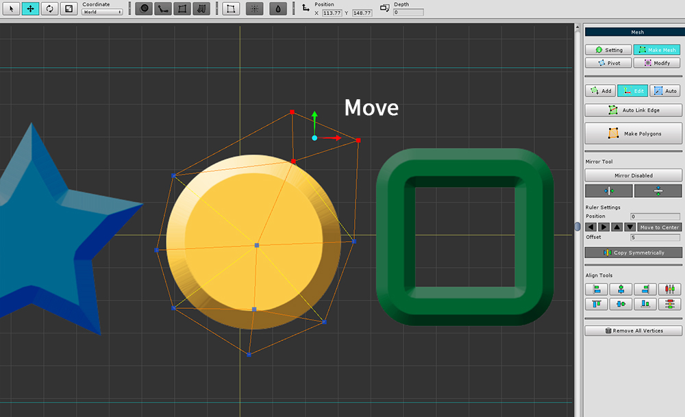
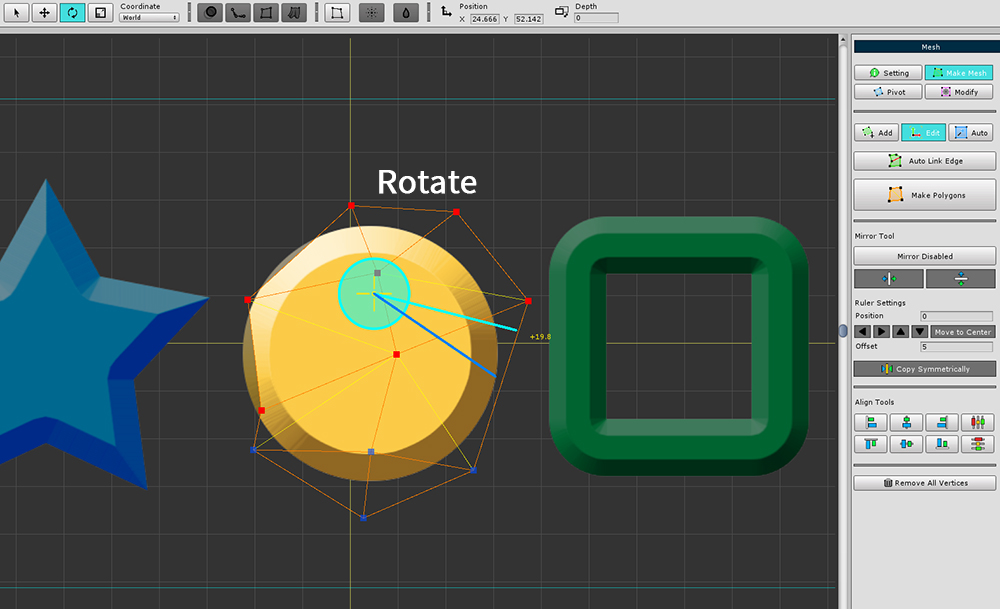
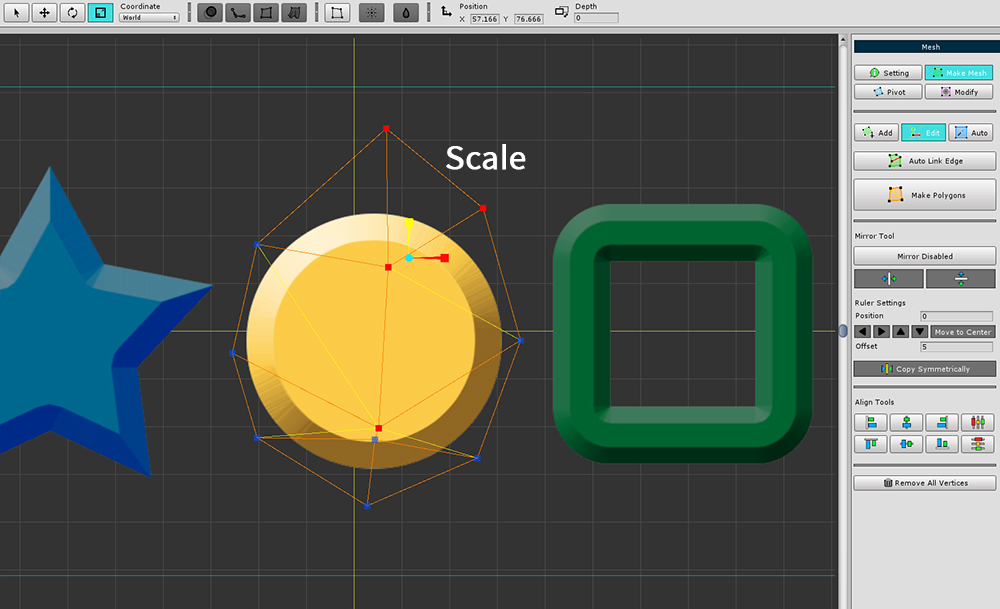
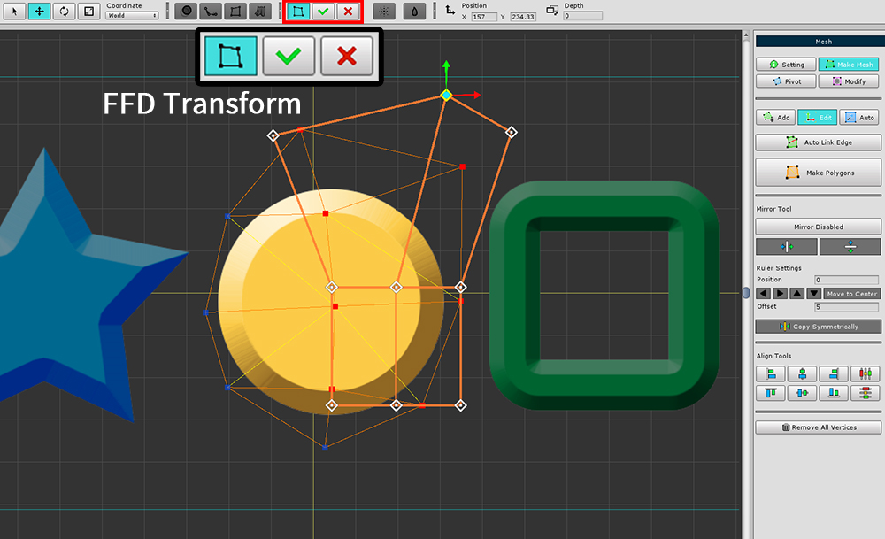
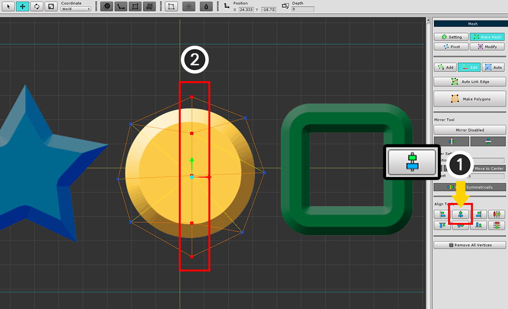
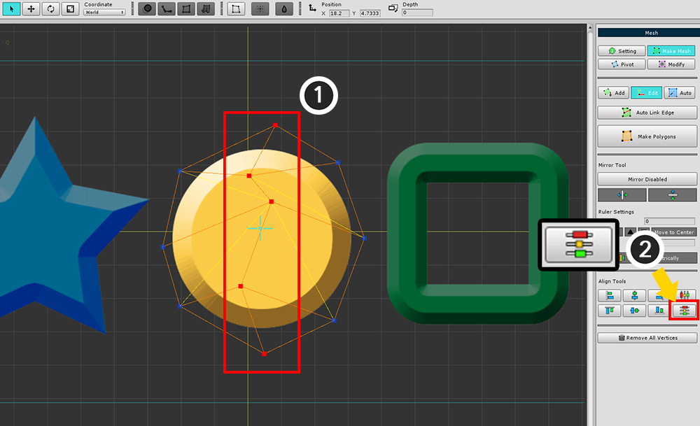
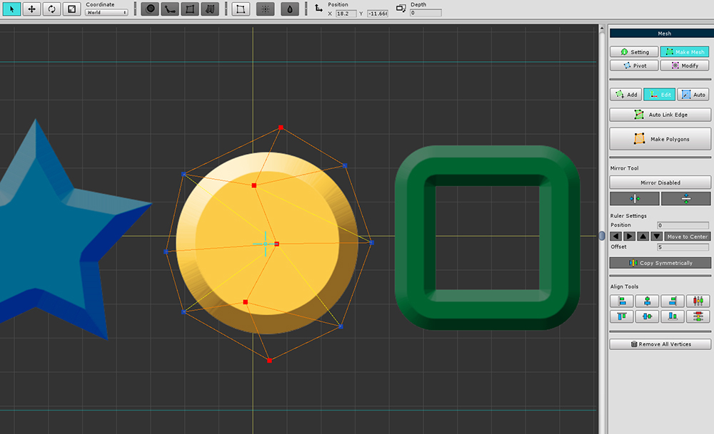

AnyPortrait > Manual > Editing Meshes
Editing Meshes
1.1.0
The traditional tools for creating meshes are to select vertices one by one to modify, add, and remove.
When you want to modify mesh vertices, this can be a little annoying.
This page describes how to select and edit multiple vertices.

(1) Select the mesh.
(2) Select the Make Mesh tab.
(3) Select the Edit tab.
When the Edit tab is selected, you can select and edit vertices.
The bottom UI is the same tool that makes meshes and includes a mirror tool.
Please refer to related page about mirror tool.

You can move the vertices by selecting the Move tool. (shortcut : W )

You can rotate the vertices by selecting the Rotate tool. (shortcut : E )

You can resize the vertices by selecting the Scale tool. (shortcut : R )
Using the FFD tool

You can use the FFD tool at the top of the screen.
Select the vertices, turn the FFD tool on and transform the shape, then press the Apply or Revert button.
Align vertices

Alignment tools is added.
(1) Make the positions of the vertices equal.
(2) Make the spacing of the vertices equal, and relocate the vertices.

(1) Pressing the "Align Center X" button,
(2) The X position of the vertices are changed to be the same.


(1) Select the vertices and (2) press the "Distribute Y Coordinates Evenly" button.
You can see that the spacing of the vertices has been relocated uniformly.